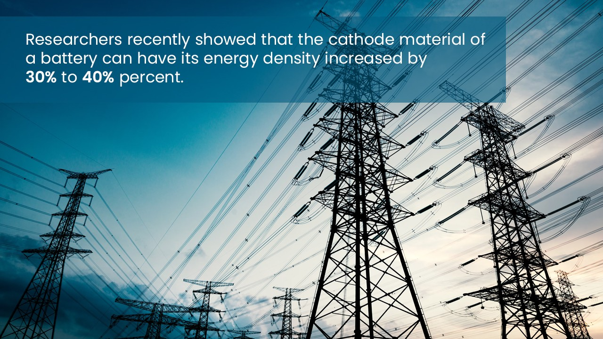
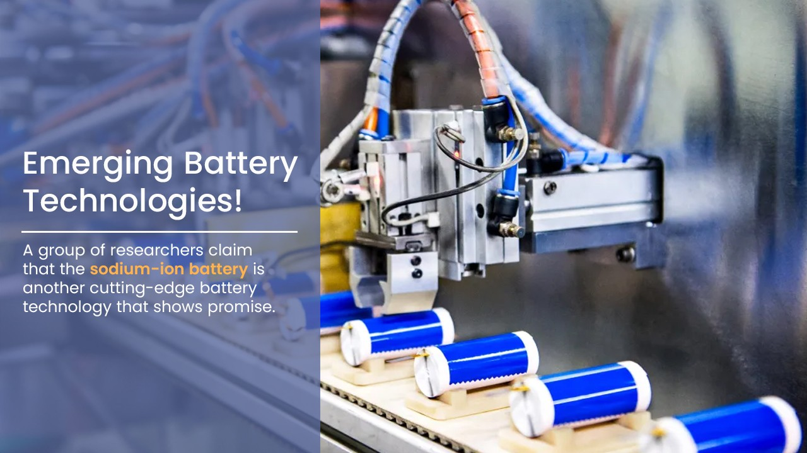

Sociological barriers
Energy storage technology advancements have transformed electric vehicles (EVs) from pure curiosity into reasonably priced and effective automobiles. Nevertheless, societal and technological obstacles continue to exist, limiting EVs' potential to have an even greater market impact.
There are some problems that science and technology could solve, and these electric cars can be proven to be highly effective systems." But there are still unanswered questions. We refer to it as range anxiety, for example.
The current generation of EV batteries is limited to a 300-mile driving range on a single charge. Drivers often feel anxious when pulling into charging stations because you can't pull into one the same way you can at a gas station, especially on long trips.
87% of cars on the road could be replaced by electric vehicles that meet or surpass daily needs without daytime recharging. A recent study suggests that range anxiety may be more psychological than technical.
Transforming the grid
In terms of greenhouse gas emissions, the energy sector is in the lead, even though the transportation sector may come in second. Researchers believe that in order to support global sustainability, EVs and a green energy grid go hand in hand, with the essential advancement in energy storage serving as their common denominator.

The core of energy production and consumption is the energy grid. The grid itself is altered when we shift our energy production from fossil fuels to renewable energy sources. The American electrical grid of today must produce precisely what is consumed at any given time. The uncontrollable nature of intermittent energy sources, like wind and solar power, is greatly impacted by the infrastructure in place. There could be widespread blackouts if the sun sets or the wind picks up. Conversely, days with high levels of sunshine or wind might generate an abundance of energy, which could cause a grid that isn't designed to store energy fluctuations to fry. Here's where basic energy storage research comes into its own.
By regulating oxygen activity, researchers recently showed that the cathode material of a battery can have its energy density increased by 30 to 40 percent. Novel developments at the fundamental level aid in the improvement of batteries and move society closer to creating large-scale, cost-effective storage solutions.
Researchers are investigating a wide range of batteries, including sodium, aqueous flow, lithium-ion, and others, in order to fully capitalize on the potential uses for these developing and innovative batteries.
Emerging battery technologies
For the energy storage of smartphones and Tesla vehicles, for instance, lithium-ion has recently been the industry standard. The technology's longevity and efficiency have made it a promising option for even large-scale grid storage, and it is only approaching its 25th anniversary of commercialization. But there are other interesting battery technologies out there that are worth pursuing, even if they might not have a market just yet.
A group of researchers claim that the sodium-ion battery is another cutting-edge battery technology that shows promise.

As sodium would be more plentiful than lithium, we want to see if there is another solution. Because of their somewhat lower operating potential, sodium-ion batteries are suitable for grid storage but not for use in electric vehicles due to their relatively low energy density.
The creation of a diverse energy infrastructure would make a lithium substitute advantageous as well. Nowadays, the vast majority of energy produced in many nations comes from fossil fuels alone. In the political sphere, some wonder if we should shift from total reliance on fossil fuels to total reliance on lithium if there is a chance to create a more varied energy source for the nation.
Li-ion batteries have been considered a viable substitute for lithium-oxygen batteries. There are many differing opinions regarding whether lithium-oxygen could be beneficial.
Researchers claim that all it takes to see that oxygen and lithium are both very light elements is a glance at the periodic table. This suggests that combining the two elements into a single energy storage device could produce extraordinarily high energy densities. Many are looking to Li-oxygen battery technology for the development of next-generation EVs that can travel long distances on a single charge because of this low weight and high-efficiency combination. It will be amazing technology if oxygen can actually be used as a cathode. Of course, we're a long way off from it at the moment. However, we can be certain that it won't occur if we don't fund the research.